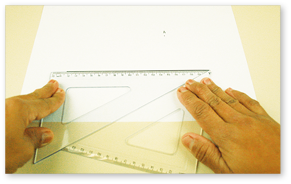
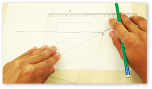
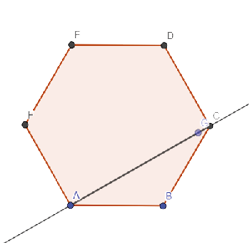
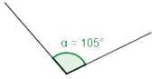
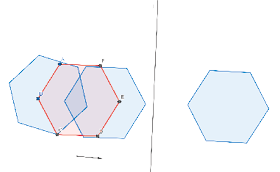
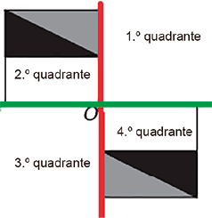

Orientações específicas
Na abertura da unidade, é possível ver uma imagem da cidade de Palmas, capital do Tocantins, que foi construída de forma planejada. Ao se observar o mapa, identifica-se como ela está organizada geometricamente. As suas ruas nos dão a ideia de paralelismo e perpendicularidade, sendo que as quadras lembram quadriláteros.
O estudo e a construção de uma cidade planejada baseiam-se em um plano previamente elaborado. Para a organização desse espaço urbano, deve-se levar em consideração as necessidades atuais e futuras da cidade, principalmente no que se refere a serviços prestados aos cidadãos. Nesse processo, os responsáveis (arquitetos, engenheiros, urbanistas, etc.) precisam analisar os aspectos socioeconômicos, topológicos e ambientais envolvidos, determinar quais serão as áreas para moradia, comércio, indústria, saúde, educação e lazer e prever um possível crescimento acelerado da cidade, para planejar para onde a área urbana poderá se expandir.
Introdução à unidade
Nesta unidade, são apresentados os conceitos de retas paralelas e perpendiculares, o ponto médio e a mediatriz de um segmento de reta e os ângulos formados por retas paralelas cortadas por uma transversal. Como em alguns momentos os alunos serão convidados a realizar construções geométricas, eles terão que usar alguns instrumentos como compasso, régua, jogo de esquadros e transferidor.
A seguir relacionamos os objetivos que se pretende atingir ao estudar os conceitos dessa unidade.
Capítulo 1 – Construções geométricas
Objetivos:
- Compreender o conceito de paralelismo e transversalidade.
- Identificar pares de retas paralelas e retas transversais.
- Compreender o conceito de retas perpendiculares.
- Compreender o conceito de mediatriz de um segmento.
- Encontrar o ponto médio e a mediatriz de um segmento.

Além disso, é necessário criar projetos urbanísticos que integrem as regiões da cidade. No Brasil, há algumas cidades planejadas, como Brasília (DF), Goiânia (GO), Maringá (PR) e Palmas (TO). No exterior, há entre muitas, Washington, nos EUA, e Camberra, na Austrália. A principal característica de uma cidade planejada é apresentar um espaço urbano um pouco mais organizado, visando melhorar a vida das pessoas que nela habitam. Porém, para que uma cidade continue organizada, a administração política é fundamental.
Capítulo 2 – Ângulos
Objetivos:
- Compreender o conceito de ângulos.
- Representar ângulos por meio de instrumentos ou softwares geométricos.
Capítulo 3 – Transformações geométricas
Objetivos:
- Rever conceito de transformações geométricas.
- Construir figuras simétricas com softwares geométricos.
Probabilidade e estatística – Planejando e executando uma pesquisa amostral
Objetivo:
- Planejar e realizar uma pesquisa amostral.
|
Principais habilidades da BNCC |
EF08MA17 |
|
Competências |
CE3, CE8, CG9 |
No primeiro capítulo, é mostrado aos alunos como construir retas paralelas e retas perpendiculares usando régua e compasso. Nesse momento, pode-se também mostrar a eles como construir retas paralelas utilizando o jogo de esquadros.
Retas paralelas
Observe como construir uma reta t paralela à reta r passando pelo ponto A.
- Com o auxílio de uma régua, desenhe a representação de uma reta r e marque um ponto A.

- Junte os dois esquadros de modo que um deles esteja alinhado à reta r.

- Deslize o esquadro que está alinhado à reta r, mantendo o outro esquadro fixo, até o ponto A.


- Trace a reta t passando pelo ponto A. Assim, temos r // t.

Essa construção ajudará na compreensão dos conceitos de ângulos formados por retas paralelas com uma transversal. Além do transferidor utilizado para medir os ângulos e de comprovar se eles são congruentes ou suplementares, os alunos poderão perceber que, ao se coincidir uma reta paralela sobre outra, os ângulos formados são coincidentes. Logo, apresentam a mesma medida.
Retas perpendiculares
Relembre os alunos que as retas perpendiculares são aquelas que se intersectam formando um ângulo reto entre elas, ou seja, um ângulo de 90°.
Nesta página, veremos como construir uma reta perpendicular a outra reta utilizando régua e compasso. Essa construção também pode ser feita por meio de softwares de geometria dinâmica.
Na construção proposta, se a abertura do compasso for menor que a metade da med (AB), não será possível determinar o ponto N.

Ponto médio e mediatriz de um segmento
Professor, no link: https://cutt.ly/KHyG5aW você encontra o passo a passo dessas e outras construções elementares da geometria euclidiana.

Atividade 6
Para traçar a altura, devemos traçar uma reta com origem nos vértices e perpendicular ao lado oposto. No triângulo retângulo, o ponto de encontro das alturas coincide com o vértice do ângulo reto e no triângulo obtusângulo, o ponto de encontro é externo ao triângulo.
Triângulo retângulo Triângulo obtusângulo
Encontre soluções
Atividade 1
Atividade 2
Atividade 3

Atividade 4

Atividade 5


Imagens: Acervo da Editora


|
Principais habilidades da BNCC |
EF08MA15, EF08MA16 |
|
Competências |
CE3, CE8, CG9 |
Recordando ângulos
Neste capítulo, vamos recordar alguns conceitos a respeito dos ângulos e conhecer algumas de suas aplicações, como na construção de polígonos. Para dar início aos estudos, propomos construções geométricas utilizando régua, esquadro, transferidor e compasso. Esses instrumentos são grandemente utilizados por engenheiros e arquitetos. Nesse sentido, se julgar oportuno, promova uma pesquisa a respeito de quais instrumentos são utilizados por esses profissionais.
O passo a passo que propomos são referentes a construção de um ângulo de 90° e do ângulo de 60°. Pode-se ampliar para outros ângulos.
Comente com os alunos que acredita-se que os primeiros a utilizar o esquadro foram os egípcios, devido as suas bases, assim como suas pirâmides, serem compostas por pedras esquadrejadas. Os egípcios utilizavam uma corda marcada em intervalos iguais e tomando-se as medidas 3, 4 e 5 para os lados de um triângulo, obtinham um triângulo retângulo, em que os catetos menores eram os lados de 3 e 4 unidades e a hipotenusa o lado maior. Assim, usavam essas medidas para confeccionar triângulos de madeira com a forma muito similar aos esquadros que conhecemos hoje em dia, utilizando os mesmos para manter o alinhamento de suas construções.
Nesta página propomos aos alunos, por meio de um fluxograma, a construção de uma figura geométrica plana denominada hexágono regular, pois ele deve apresentar todos os lados congruentes. Para isso, retome com os alunos a nomenclatura dos polígonos e sua classificação em função da quantidade de lados.
- Triângulo: possui 3 lados.
- Quadrilátero: possui 4 lados.
- Pentágono: possui 5 lados.
- Hexágono: possui 6 lados.
- Heptágono: possui 7 lados.
- Octógono: possui 8 lados.
- Eneágono: possui 9 lados.
- Decágono: possui 10 lados.
- Undecágono: possui 11 lados.
- Dodecágono: possui 12 lados.
- Pentadecágono: possui 15 lados.
- Icoságono: possui 20 lados.
Os passos a serem executados pelos alunos no fluxograma são:


Encontre soluções
Atividade 1
B
O
O
O
B
B
A
A
A
|
Principais habilidades da BNCC |
EF08MA16, EF08MA18, EF08MA25, EF08MA26, EF08MA27 |
|
Competências |
CE3, CE4, CE5, CE8, CG9 |
Neste capítulo, retomamos o conceito de simetria por reflexão, por rotação e por translação. Para auxiliar na construção de figuras geométricas, propomos a utilização de softwares de geometria dinâmica com um passo a passo de como representar a simetria de reflexão em relação a uma reta, a simetria de rotação em torno de um ponto e a simetria de translação em torno de um ponto no Geogebra.
Proponha aos alunos que façam algumas obras de arte utilizando os conceitos de simetria. Para essa atividade, pode-se precisar de folhas de papel A4, tinta ou lápis de cor. Inicialmente, apresente um modelo desenhado no quadro ou impresso em uma folha. Deixe o modelo em um lugar visível a todos, distribua as filhas de papel A4 e solicite que façam a de simetria por reflexão, por rotação e por translação desse modelo em suas folhas. Após pintarem, promova um momento de exposição dos trabalhos elaborados e, se possível, atue de forma conjunta com o professor de Arte.
Nesta página, iniciamos algumas construções simétricas utilizando como ferramenta o software Geogebra. Antes de iniciar a aula, verifique se todos os alunos terão acesso ao programa, seja pelo computador ou pelo celular na versão mobile. Interagir com as ferramentas digitais são de grande importância aos alunos, tornando o aprendizado do conteúdo mais significante a eles.
Após a construção das situações propostas, solicite que criem outras figuras seguindo o mesmo passo a passo com as devidas adaptações.
Atividade 1
Atividade 1
Proponha aos alunos uma pesquisa sobre a vida de Escher e, em seguida, solicite que identifiquem nas imagens o padrão que está sendo utilizado em cada caso.
©MC Escher

ESCHER, Maurits Cornelis. Anjos e Demônios. 1941. Xilogravura impressa. Ensaio para a obra Circle Limit IV (Céu e Inferno) de 1960. Acervo Museu M.C. Escher, Het Paleis, Holanda.
©MC Escher

ESCHER, Maurits Cornelis. Lagartos (n.° 56). 1942. Xilogravura. Acervo Museu M.C. Escher, Het Paleis, Holanda.
Acervo/M.C. Escher Company BV

ESCHER, Maurits Cornelis. Peixe, pato, tartaruga (n.º 69). 1948. Aquarela. Acervo do M.C. Escher Company BV, Baarn, Holanda.
Acervo/MC Escher Company BV

Encontre soluções
Atividade 1

Após eles realizarem a pesquisa, oriente-os como construir o gráfico utilizando um software de planilha eletrônica.
ESCHER, Maurício Cornelis. Pássaros e peixes. 1938. Aquarela, lápis e tinta, 37x37 cm. Acervo do MC Escher Company BV, Baarn, Holanda.
Probabilidade e estatística – Planejando e executando uma pesquisa amostral
Relembre os alunos que na possibilidade de entrevistar toda a população envolvida em uma pesquisa, dizemos que é uma pesquisa censitária. Neste caso, é necessário entrevistar 100% dos participantes. No Brasil, um exemplo de pesquisa censitária é o Censo Demográfico realizado pelo Instituto Brasileiro de Geografia e Estatística (IBGE).
Propomos que os alunos, em grupos, realizem uma pesquisa amostral de acordo com o tema, objetivo e população que entendam ser relevante. Oriente-os na realização de cada passo do método estatístico. Após realizarem a pesquisa, oriente-os como construir o gráfico utilizando um software de planilha eletrônica.

Comente com os alunos que o primeiro censo no Brasil foi realizado em 1872. Até então, os dados sobre a população brasileira eram obtidos de forma indireta, isto é, não eram feitos levantamentos com o objetivo estrito de contar o número de habitantes. As pesquisas amostrais, quando trazem informação de relevância, normalmente seguem padrões rígidos de fiscalização como por exemplo, as pesquisas eleitorais, tendo que apontar o método, margem de erro, etc.
Relembre
Atividade 1

Atividade 2

Atividade 3

- 

Atividade 6

Atividade 7
Traçando-se um eixo vertical (em vermelho) e um horizontal (em verde) passando pelo ponto O e pelos lados da figura, percebe-se que a original se encontra no 2.º quadrante, sendo assim, a figura simétrica deve estar no 4.º quadrante.
